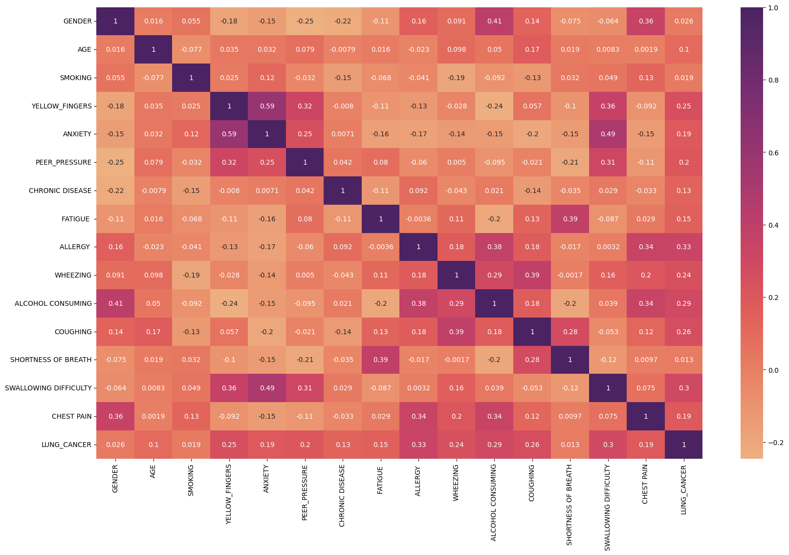
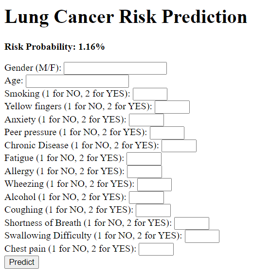

Lung Cancer Risk Analysis Project
Project Overview
This project aims to analyze risk factors associated with lung cancer using machine learning techniques. I used a dataset containing various health indicators and developed a logistic regression model to predict lung cancer risk.
Jupyter Notebook
Data Visualization
Correlation Heatmap

Key findings from the heatmap:
- Strong positive correlation between Anxiety and Yellow Fingers (0.59)
- Moderate correlation between Shortness of Breath and Fatigue (0.39)
Model Performance
Logistic Regression model achieved the following performance:
- Accuracy: 96.428%
- Mean Cross-Validation Score: 90.57%
Key Insights
- Age and Gender show notable correlations with Lung Cancer risk
- Chronic Disease has weaker correlations than expected with most factors
- Psychological factors (Anxiety, Peer Pressure) show interesting relationships with physical symptoms
Flask Application

- Built using Flask framework
- Integrates the trained logistic regression model
- Implements data preprocessing to handle user inputs
- Real-time risk prediction based on user inputs
- Clear display of predicted risk percentage
Future Work
Next steps for this project include:
- Exploring advanced feature engineering techniques
- Comparing performance with other machine learning algorithms
- Creating more data visualizations